Na disciplina de Banco de Dados, iniciamos com o conceito e a definição de tipos de estruturas de dados:
Dados estruturados
Dados não estruturados
Dados semi-estruturados
Os dados estruturados utilizam uma organização predefinida (ex: tabelas) para manter uma estrutura formal que facilita a pesquisa.
Os dados não estruturados não possuem um formato específico, tornando sua organização e análise mais complicadas. Normalmente, incluem e-mails, documentos de texto, publicações em redes sociais e arquivos multimídia.
Os dados semi-estruturados são um meio-termo entre os dois anteriores, apresentando alguma organização, mas ainda permitindo pesquisas mais fáceis do que nos dados não estruturados.
Após isso, exploramos os tipos de modelos de modelagem de dados: conceitual, lógico e físico.
Modelos Conceitual, Lógico e Físico de Modelagem de Dados:
O modelo conceitual é uma representação abstrata que mostra as entidades, seus atributos e o relacionamento entre elas.
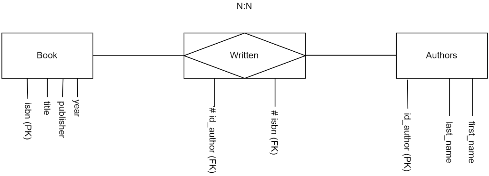
O modelo lógico foca na criação do sistema da etapa anterior, adotando o sistema de tabelas com linhas e colunas, juntamente com a definição de tipos de dados, chaves primárias e estrangeiras e qualquer tipo de restrição necessária.
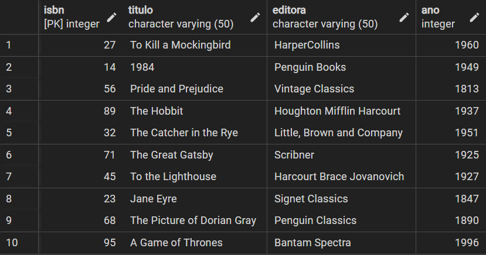
O modelo físico finaliza o processo, sendo a implementação total do banco de dados de acordo com o negócio desenvolvido.
Após termos explorado esses conceitos, trabalhamos os modelos conceituais por meio do diagrama entidade-relacionamento:
Modelo Entidade-Relacionamento (ER):
Para explicar como esses diagramas funcionam, usarei o exemplo a seguir:
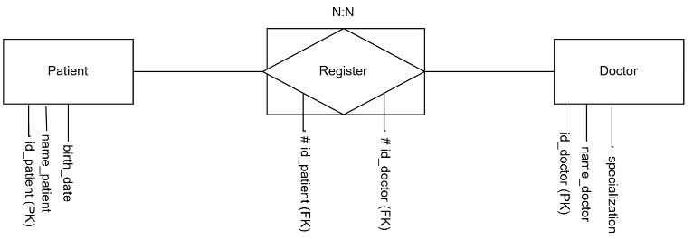
Existem três entidades representadas:
Paciente (Patient)
Médico (Doctor)
Registro (Register)
*Registro é a entidade que surge do relacionamento entre Paciente e Médico.
A entidade Paciente tem os seguintes atributos:
Data de nascimento (birth_date)
Nome do paciente (name_patient)
ID do paciente (id_patient) (PRIMARY KEY - PK)
A entidade Médico tem os seguintes atributos:
Especialização (specialization)
Nome do médico (name_doctor)
ID do médico (id_doctor) (PRIMARY KEY - PK)
A entidade Registro tem os seguintes atributos:
ID do médico (id_doctor) (FOREIGN KEY - FK)
ID do paciente (id_patient) (FOREIGN KEY - FK)
As FOREIGN KEY presentes nessa entidade referenciam as duas outras entidades, formando os relacionamentos entre elas. Um Paciente pode ter vários Registros, e um Médico também pode ter vários Registros.
SGBD - Sistema de Gerenciamento de Banco de Dados:
Paralelamente, utilizamos o SGBD PostgreSQL para a realização dos modelos físicos.
Durante a utilização do PostgreSQL, utilizamos diferentes comandos para atender às demandas das aplicações:
Comandos DDL - Data Definition Language
Os comandos DDL são utilizados para a criação e definição das tabelas presentes no projeto:
CREATE TABLE
O CREATE TABLE é utilizado para criar uma nova tabela, permitindo a definição de nome e tipo de dados presentes nela.
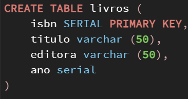
ALTER TABLE
O ALTER TABLE é utilizado para modificar um atributo de uma tabela existente, podendo adicionar ou remover colunas, alterar o tipo de dado armazenado e renomear uma coluna ou tabela.
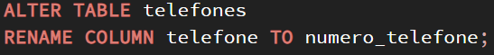
DROP TABLE
O DROP TABLE é utilizado para apagar uma tabela existente.
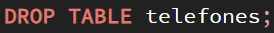
Comandos DML - Data Manipulation Language
Os comandos DML são utilizados para inserir valores e manipulá-los através de diferentes comandos:
INSERT
O INSERT é utilizado para inserir conteúdos nas tabelas criadas, respeitando os tipos de dados declarados e suas condições.
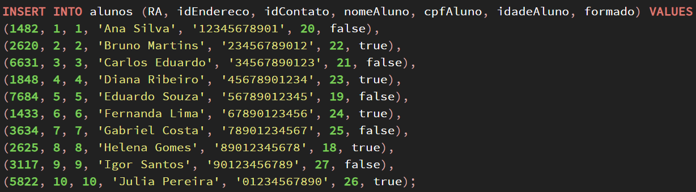
UPDATE
O UPDATE é utilizado para modificar os dados já inseridos em uma tabela, permitindo alterações futuras.
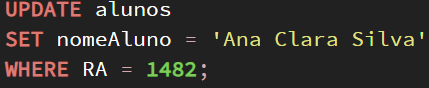
DELETE
O DELETE é utilizado para deletar dados presentes em uma tabela.
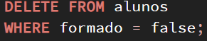
SELECT
O SELECT * FROM é utilizado para visualizar uma tabela existente em sua totalidade, permitindo visualizar todos os dados presentes nela e qualquer tipo de alteração necessária.
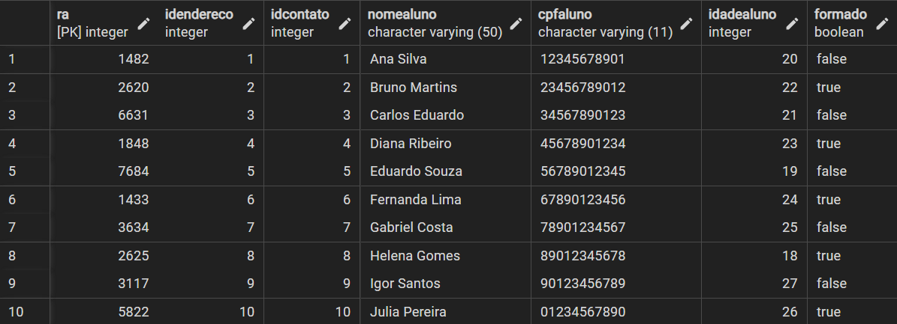
Comandos DQL - Data Query Language
Os comandos DQL são utilizados em conjunto com o SELECT para trazer visualizações de tabelas apenas para análise, sem interferir na execução principal. Utilizam-se diferentes tipos de operadores lógicos e matemáticos, funções de ordenação e agrupamento para realizar essas consultas.
JOIN
O JOIN é uma função que possibilita apresentar dados de tabelas distintas no formato de uma coluna única, servindo apenas para visualização, pois não gera nenhuma outra tabela além das existentes.
JOIN FROM
O JOIN FROM realiza a ação de juntar tabelas distintas em uma única.
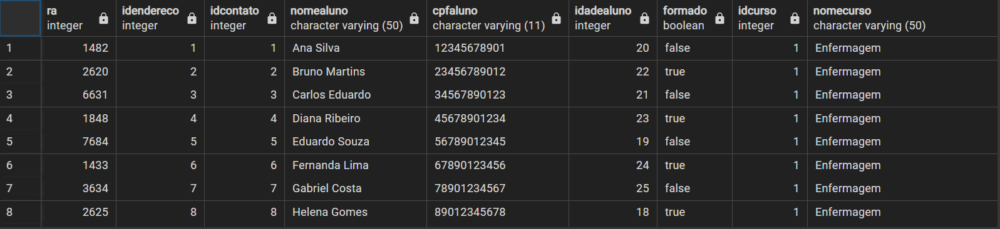
CROSS JOIN
O CROSS JOIN realiza a multiplicação da linha da primeira tabela por cada linha da segunda tabela, resultando na replicação dos valores.
INNER JOIN
O INNER JOIN exibe todas as colunas de ambas as tabelas, mas apenas as linhas que satisfazem a condição ON.
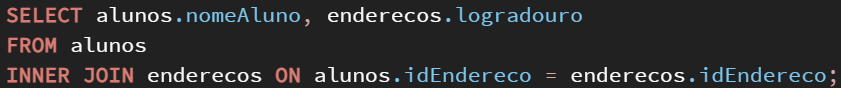
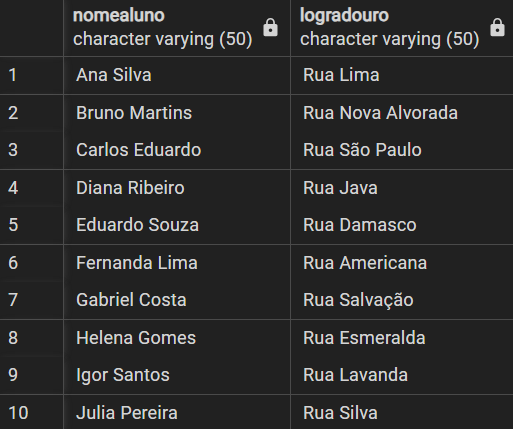
LEFT JOIN
O LEFT JOIN retorna a tabela da esquerda inteira, retornando a tabela da direita com apenas as linhas que satisfazem a condição ON; caso contrário, estarão vazias.
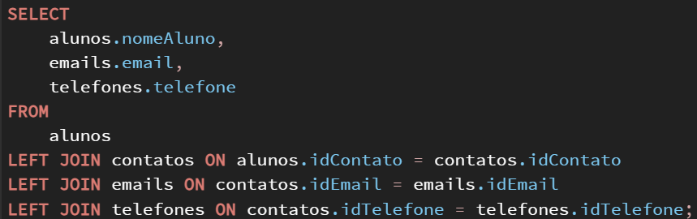
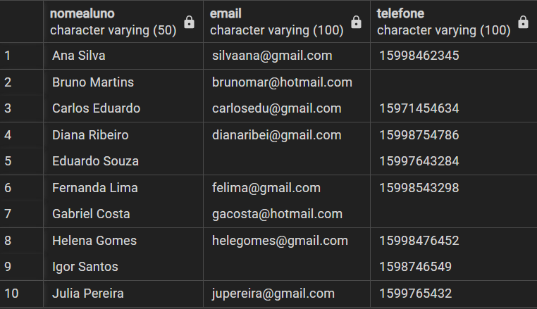
RIGHT JOIN
O RIGHT JOIN retorna a tabela da direita inteira, retornando a tabela da esquerda com apenas as linhas que satisfazem a condição ON; caso contrário, estarão vazias.
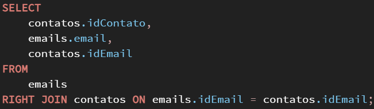
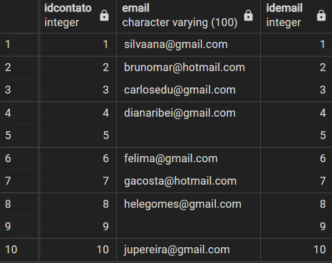
FULL JOIN
O FULL JOIN retorna todas as linhas de ambas as colunas, caso tenham correspondência na condição ON; caso contrário, retornará NULL na linha não correspondente.
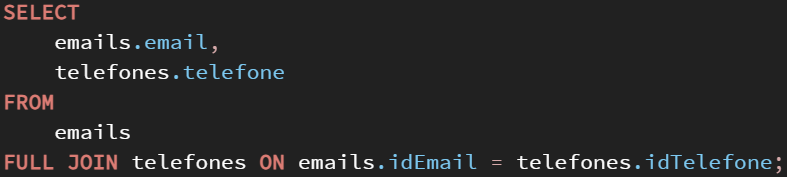
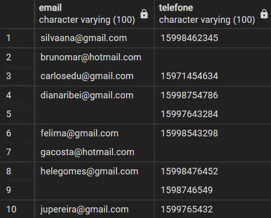
Normalização
A normalização é o processo de adaptar um banco de dados para excluir ou reduzir as redundâncias presentes. Essas redundâncias seriam repetições desnecessárias que comprometem o armazenamento e possíveis alterações dos dados no futuro.
Primeira Forma Normal
Uma tabela está na Primeira Forma Normal quando todos os seus atributos contêm apenas valores atômicos e únicos. Isso significa que não deve haver grupos de atributos repetidos ou colunas que contenham mais de um valor.
Segunda Forma Normal
Além de atender a todos os requisitos da Primeira Forma Normal, uma tabela está na Segunda Forma Normal quando todos os atributos não-chave são completamente dependentes da chave primária. Isso evita a redundância parcial e garante que cada informação na tabela dependa da chave primária em sua totalidade.
Terceira Forma Normal
Uma tabela alcança a Terceira Forma Normal quando, além de cumprir as duas primeiras formas normais, não possui dependências transitivas entre os atributos não-chave. Ou seja, cada atributo não-chave deve depender apenas da chave primária e não de outros atributos não-chave.
Banco de Dados NoSQL:
Os Bancos de Dados NoSQL são projetados para armazenar e gerenciar grandes volumes de dados desestruturados ou semi-estruturados. Eles são conhecidos por sua flexibilidade, pois não exigem um esquema fixo, e são capazes de escalar horizontalmente, o que os torna ideais para aplicações modernas que necessitam de grande volume de dados e alta velocidade de acesso.
Vantagens:
Incluem a ausência de esquema fixo, alta escalabilidade e disponibilidade, e a capacidade de lidar com grandes quantidades de dados.
Desvantagens:
A consistência dos dados pode ser menos garantida em comparação com os bancos de dados relacionais, e pode exigir mais programação devido à falta de uma linguagem de consulta declarativa.
Tipos de Bancos de Dados NoSQL:
Existem várias categorias, incluindo bancos de dados chave/valor, orientados a documentos, famílias de colunas e orientados a grafos.
MongoDB
Começamos a trabalhar com o Banco de Dados NoSQL MongoDB:
Desvantagens: Não é adequado para sistemas onde relacionamentos e operações de JOIN são cruciais.
Vantagens: Excelente para lidar com grandes volumes de dados desestruturados e para esquemas de dados variáveis.
Operações Básicas: Incluem comandos para criar bancos de dados e coleções, inserir dados e realizar consultas básicas.